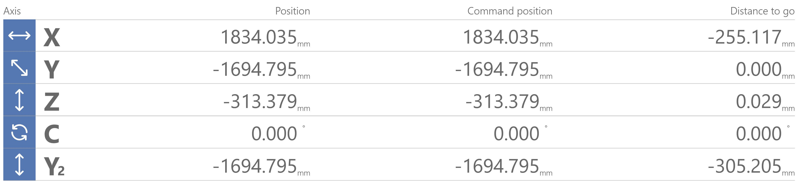
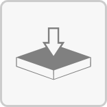
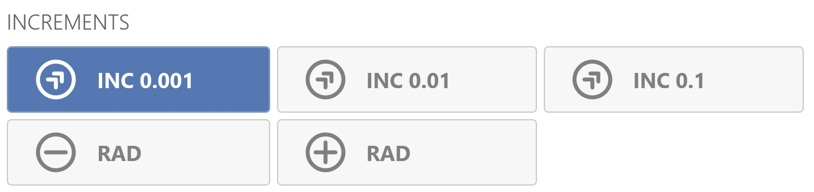

In questa modalità è possibile eseguire cicli automatici e caricare file di lavorazione da eseguire in maniera automatica.

Visualizzazione assi
La posizione del centro macchina e le distanze da percorrere per raggiungere la quota obiettivo sono sempre visualizzabili nella parte superiore della pagina, divise ordinatamente per singolo asse.

Controllo ISO
Dal grande pannello che occupa la parte inferiore sinistra di questa pagina è possibile caricare un file di lavorazione ed eseguirlo, modificarlo, visualizzarne l’avanzamento.

 | Seleziona file di lavorazione |
 | Modifica file di lavorazione |
Cambio modalità di esecuzione | |
 | Anteprima di taglio |
 | Tastature pezzo |
Elenco di lavorazioni con utensili | |
 | Visualizzazione proiettore laser (Opzionale) |
Anteprima di taglio
Vengono evidenziate in verde le lavorazioni eseguite, quelle in corso invece vengono evidenziate in giallo. L’istruzione in esecuzione viene evidenziata all’interno del codice ISO.

Tastature pezzo
Durante l’esecuzione di un file di lavorazione possono essere eseguite delle tastature del pezzo da lavorare, i cui risultati vengono salvati in una tabella riepilogativa.

Elenco di lavorazioni con utensili
Permette di visualizzare l’elenco di lavorazioni che verranno eseguite nel corso del ciclo di lavoro.

Modificare lavorazioni
Permette di abilitare/disabilitare le singole lavorazioni.

 | Modifica manuale del file di lavorazione |
Salvataggio del file di lavorazione | |
 | Abilita/disabilita lavorazione |
Visualizzazione proiezione laser (Opzionale)
Permette di scegliere i layer da visualizzare con il laser, questi sono attivabili dall’elenco sulla destra. È anche possibile aprire manualmente un DXF contenente il disegno da proiettare con laser.

Comandi laser (Opzionale)
La gestione del laser di proiezione avviene tramite questi comandi.
  | Attiva/Disattiva proiezione |
Cancella file di proiezione | |
 | Carica file di proiezione |
Incrementi
Mediante questi comandi posizionati nell’area centrale sul lato destro dell’interfaccia è possibile raffinare la posizione dell’utensile durante l’esecuzione di una lavorazione di profilatura.

Incremento 0.001 | |
 | Incremento 0.01 |
 | Incremento 0.1 |
Decremento raggio utensile | |
Incremento raggio utensile |
Comandi
Nella modalità di lavoro automatica sono disponibili i seguenti comandi nel pannello in basso a destra:
DRY RUN | |
 | Pompa del vuoto |
 | Attrezzaggio |
 | Unisci zone vuoto |
 | Abbassa dispositivi telescopici |
 | Alza dispositivi telescopici |
 | Parcheggio |